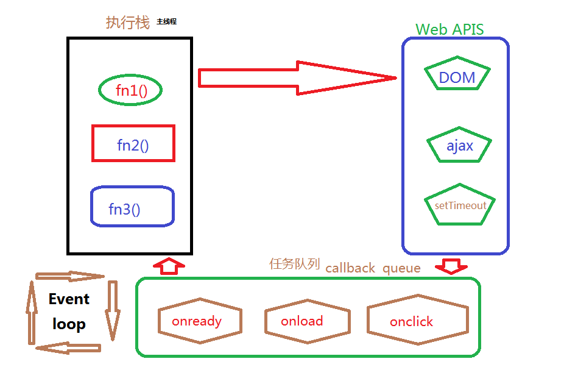

在对JavaScript语言稍有了解的人都知道，JavaScript语言的执行环境是单线程的，也就是说在js引擎中负责解释和执行JavaScript代码的线程只有一个,通常来讲，单线程就是一次只能完成一件任务，如果有许多的任务，那就需要排队顺序等待js引擎去执行，接下来的内容里就详细的了解js运行的原理。
首先了解下单线程有什么缺点呢？如果说一个任务可能耗时会很长的话，那么后面的任务都必须排队等着，那么整个程序的执行是不是都被影响了呢？这就是我们常见的浏览器无响应，比如有一个死循环，导致整个页面都卡在这个任务上，其他任务无法执行。那么单线程有这么大弊端，为什么不使用多线程呢？这与JavaScript的用途有很大关系，作为浏览器的脚本语言，JavaScript语言的主要作用是与用户互动，和才做dom，也就是操作页面元素，改变视图的呈现，就这个作用也就决定了JavaScript也就只能是单线程的，打个比方，我现在有两个任务需要操作页面中的同一个元素的呈现方式，如果是单线程的话这个操作时有先后顺序的，也就能呈现出我预期的效果，但是这两个操作被分配到了两个线程上，操作顺序可能会受到影响，举个例子：我们平时去超市购物，通常会有多个收银台，各自互不影响，假如现在只有一个收银台，人流量相对小的情况下也是会正常运行的，为什么超市收银会正常运行了，就是你们选的商品都是互相独立的，假设一下，有两个顾客购买了同一件商品，不是同一类商品，是同一件商品，那么怎么去收银结账呢？显然是不行的。所以，从JavaScript诞生起，JavaScript就是单线程的，这已经成为JavaScript语言的核心特征，将来也不会改变。虽然在HTML5中提出了Web Worker标准，允许JavaScript脚本创建多个线程，但是子线程完全受主线程的控制，而且不允许操作DOM，所以这个标准也并没有改变JavaScript单线程的本质。
进程是CPU资源分配的最小单位，进程可以由多个线程组成，浏览器就是多进程的，例如你每打开的一个浏览器窗口就是一个进程，就像超市收银这一个环节就是一个进程。
线程是CPU调度的最小单位，同一进程下的各个线程之间共享程序的内存空间，就像超市的某一个收银台。
浏览器常规进程大概有四个：
1.Browser进程（主进程），浏览器只有一个主进程，负责协调和主控资源的管理和下载，界面展示等主要的基础功能，例如与用户交互（前进后退），创建和销毁其他的进程。
2.渲染进程，也叫Renderer进程，内部是多线程的，也就是我们每个标签页所拥有的进程，负责js的执行、页面渲染以及事件处理等基本功能。
3.GPU进程，复杂3D图示绘制。
4.第三方插件进程，负责第三方插件处理，每种类型的插件对应一个进程，仅当使用该插件的时候才创建。
与我们的JavaScript执行相关的就是渲染进程了，也就是说我们的页面渲染都在这个进程下面进行了，那么这个进程下务必会有多个线程，主要有：GUI渲染线程、Js引擎线程、事件循环线程、定时器线程、http异步线程。下面就来了解这几个线程。
1.GUI渲染线程：
★首先浏览器会解析html代码（实际上html代码本质是字符串）转化为浏览器认识的节点，生成DOM树，也就是DOM Tree
★然后解析css，生成CSSOM（CSS规则树）
★把DOM Tree 和CSSOM结合，生成Rendering Tree(渲染树)
GUI就是来干这个事情的，如果修改了一些元素的颜色或者背景色，页面就会重绘（Repaint），如果修改元素的尺寸，页面就会回流（Reflow），当页面需要Repaing和Reflow时GUI多会执行，进行页面绘制。
2.JS引擎线程:
js引擎线程就是js内核，负责解析与执行js代码，也称为主线程。浏览器同时只能有一个JS引擎线程在运行JS程序，所以js是单线程运行的。
需要强调的是：js引擎线程和GUI渲染线程同时只能有一个工作，js引擎线程会阻塞GUI渲染线程。在浏览器渲染的时候遇到script标签，就会停止GUI的渲染，然后js引擎线程开始工作，执行里面的js代码，等js执行完毕，js引擎线程停止工作，GUI继续渲染下面的内容。所以如果js执行时间太长就会造成页面卡顿的情况。
3.事件触发线程:
事件循环线程用来管理控制事件循环，并且管理着一个事件队列（task queue），当js执行碰到事件绑定和一些异步操作时，会把对应的事件添加到对应的线程中（比如定时器操作，便把定时器事件添加到定时器线程），等异步事件有了结果，便把他们的回调操作添加到事件队列，等待js引擎线程空闲时来处理。
★听起来像JS的执行，但是其实归属于浏览器，而不是JS引擎，用来控制时间循环（可以理解，JS引擎自己都忙不过来，需要浏览器另开线程协助）
★当JS引擎执行代码块如setTimeout时（也可来自浏览器内核的其他线程,如鼠标点击、AJAX异步请求等），会将对应任务添加到事件线程中
★当对应的事件符合触发条件被触发时，该线程会把事件添加到待处理队列的队尾，等待JS引擎的处理
★注意：由于JS的单线程关系，所以这些待处理队列中的事件都得排队等待JS引擎处理（当JS引擎空闲时才会去执行）
4.定时器线程:
由于js是单线程运行，所以不能抽出时间来计时，只能另开辟一个线程来处理定时器任务，等计时完成，把定时器要执行的操作添加到事件任务队列尾，等待js引擎线程来处理。这个线程就是定时器线程.
★setInterval与setTimeout所在线程
★定时计时器并不是由JS引擎计时的，因为如果JS引擎是单线程的，如果JS引擎处于堵塞状态，那会影响到计时的准确
★当计时完成被触发，事件会被添加到事件队列，等待JS引擎空闲了执行
★注意：W3C的HTML标准中规定，setTimeout中低与4ms的时间间隔算为4ms
5.异步HTTP请求线程:
当执行到一个http异步请求时，便把异步请求事件添加到异步请求线程，等收到响应（准确来说应该是http状态变化），把回调函数添加到事件队列，等待js引擎线程来执行。
★在XMLHttpRequest在连接后新启动的一个线程
★线程如果检测到请求的状态变更，如果设置有回调函数，该线程会把回调函数添加到事件队列，同理，等待JS引擎空闲了执行
1.JavaScript引擎是基于事件驱动单线程执行的，JS引擎一直等待着任务队列中任务的到来，然后加以处理，浏览器无论什么时候都只有一个JS线程在运行JS程序。
2.GUI渲染线程负责渲染浏览器界面，当界面需要重绘（Repaint）或由于某种操作引发回流(reflow)时,该线程就会执行。但需要注意 GUI渲染线程与JS引擎是互斥的，当JS引擎执行时GUI线程会被挂起，GUI更新会被保存在一个队列中等到JS引擎空闲时立即被执行。
3.事件触发线程，当一个事件被触发时该线程会把事件添加到待处理队列的队尾，等待JS引擎的处理。这些事件可来自JavaScript引擎当前执行的代码块如setTimeOut、也可来自浏览器内核的其他线程如鼠标点击、AJAX异步请求等，但由于JS的单线程关系所有这些事件都得排队等待JS引擎处理。（当线程中没有执行任何同步代码的前提下才会执行异步代码）
单线程就意味着，所有任务需要排队，前一个任务结束，才会执行后一个任务。如果前一个任务耗时很长，后一个任务就不得不一直等着。
如果排队是因为计算量大，CPU忙不过来，倒也算了，但是很多时候CPU是闲着的，因为IO设备（输入输出设备）很慢（比如Ajax操作从网络读取数据），不得不等着结果出来，再往下执行。
JavaScript语言的设计者意识到，这时主线程完全可以不管IO设备，挂起处于等待中的任务，先运行排在后面的任务。等到IO设备返回了结果，再回过头，把挂起的任务继续执行下去。
于是，所有任务可以分成两种，一种是同步任务（synchronous），另一种是异步任务（asynchronous）。同步任务指的是，在主线程上排队执行的任务，只有前一个任务执行完毕，才能执行后一个任务；异步任务指的是，不进入主线程、而进入"任务队列"（task queue）的任务，只有"任务队列"通知主线程，某个异步任务可以执行了，该任务才会进入主线程执行。
具体来说，异步执行的运行机制如下。（同步执行也是如此，因为它可以被视为没有异步任务的异步执行。）
（1）所有同步任务都在主线程上执行，形成一个执行栈（execution context stack）。
（2）主线程之外，还存在一个"任务队列"（task queue）。只要异步任务有了运行结果，就在"任务队列"之中放置一个事件。
（3）一旦"执行栈"中的所有同步任务执行完毕，系统就会读取"任务队列"，看看里面有哪些事件。那些对应的异步任务，于是结束等待状态，进入执行栈，开始执行。
（4）主线程不断重复上面的第三步。
"任务队列"是一个事件的队列（也可以理解成消息的队列），IO设备完成一项任务，就在"任务队列"中添加一个事件，表示相关的异步任务可以进入"执行栈"了。主线程读取"任务队列"，就是读取里面有哪些事件。
"任务队列"中的事件，除了IO设备的事件以外，还包括一些用户产生的事件（比如鼠标点击、页面滚动等等）。只要指定过回调函数，这些事件发生时就会进入"任务队列"，等待主线程读取。
所谓"回调函数"（callback），就是那些会被主线程挂起来的代码。异步任务必须指定回调函数，当主线程开始执行异步任务，就是执行对应的回调函数。
"任务队列"是一个先进先出的数据结构，排在前面的事件，优先被主线程读取。主线程的读取过程基本上是自动的，只要执行栈一清空，"任务队列"上第一位的事件就自动进入主线程。但是，由于存在后文提到的"定时器"功能，主线程首先要检查一下执行时间，某些事件只有到了规定的时间，才能返回主线程。
主线程从"任务队列"中读取事件，这个过程是循环不断的，所以整个的这种运行机制又称为Event Loop（事件循环）。如图理解：

GUI渲染进程与JS引擎线程互斥：
因为JS引擎可以修改DOM树，那么如果JS引擎在执行修改了DOM结构的同事，GUI线程也在渲染页面，那么这样就会导致渲染线程获取的DOM的元素信息可能与JS引擎操作DOM后的结果不一致。为了防止这种现象，GUI线程与JS线程需要设计为互斥关系，当JS引擎执行的时候，GUI线程需要被冻结，但是GUI的渲染会被保存在一个队列当中，等待JS引擎空闲的时候执行渲染。
由此也可以推出，如果JS引擎正在进行CPU密集型计算，那么JS引擎将会阻塞，长时间不空闲，导致渲染进程一直不能执行渲染，页面就会看起来卡顿卡顿的，渲染不连贯，所以，要尽量避免JS执行时间过长。
JS引擎线程与事件触发线程、定时触发器线程、异步HTTP请求线程:
事件触发线程、定时触发器线程、异步HTTP请求线程三个线程有一个共同点，那就是使用回调函数的形式，当满足了特定的条件，这些回调函数会被执行。这些回调函数被浏览器内核理解成事件，在浏览器内核中拥有一个事件队列，这三个线程当满足了内部特定的条件，会将这些回调函数添加到事件队列中，等待JS引擎空闲执行。例如异步HTTP请求线程，线程如果检测到请求的状态变更，如果设置有回调函数，回调函数会被添加事件队列中，等待JS引擎空闲了执行。
但是，JS引擎对事件队列（宏任务）与JS引擎内的任务（微任务）执行存在着先后循序，当每执行完一个事件队列的时间，JS引擎会检测内部是否有未执行的任务，如果有，将会优先执行（微任务）。
除了放置异步任务的事件，"任务队列"还可以放置定时事件，即指定某些代码在多少时间之后执行。这叫做"定时器"（timer）功能，也就是定时执行的代码。
定时器功能主要由setTimeout()和setInterval()这两个函数来完成，它们的内部运行机制完全一样，区别在于前者指定的代码是一次性执行，后者则为反复执行。以下主要讨论setTimeout()。
setTimeout()接受两个参数，第一个是回调函数，第二个是推迟执行的毫秒数。
如果将setTimeout()的第二个参数设为0，就表示当前代码执行完（执行栈清空）以后，立即执行（0毫秒间隔）指定的回调函数。
var a = 0;
console.log(a);
var timer = setInterval(function(){
},0);
for(var i=0;i<10001;i++){
}
console.log(a+1);
function add(num){
}
add('这是一个函数');
总之，setTimeout(fn,0)的含义是，指定某个任务在主线程最早可得的空闲时间执行，也就是说，尽可能早得执行。它在"任务队列"的尾部添加一个事件，因此要等到同步任务和"任务队列"现有的事件都处理完，才会得到执行。
需要注意的是，setTimeout()只是将事件插入了"任务队列"，必须等到当前代码（执行栈）执行完，主线程才会去执行它指定的回调函数。要是当前代码耗时很长，有可能要等很久，所以并没有办法保证，回调函数一定会在setTimeout()指定的时间执行。